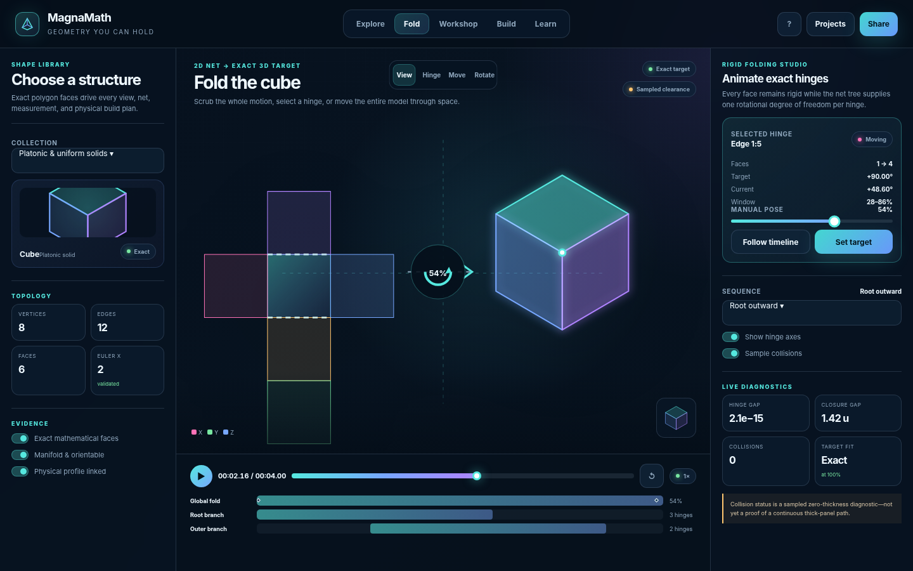
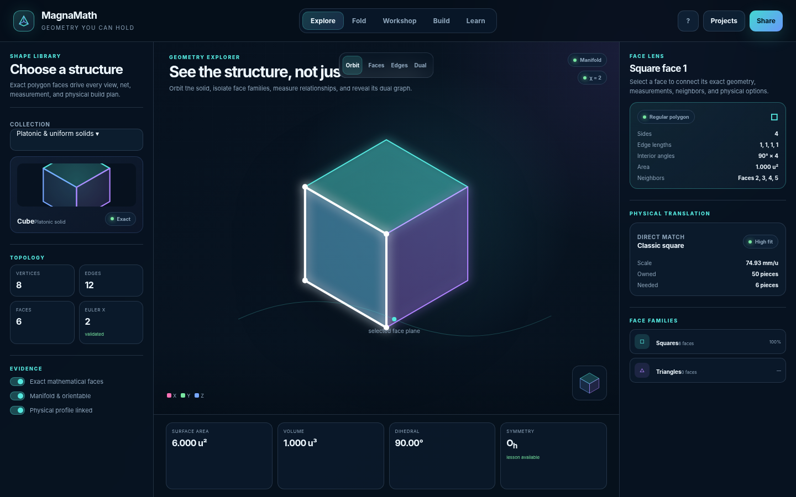
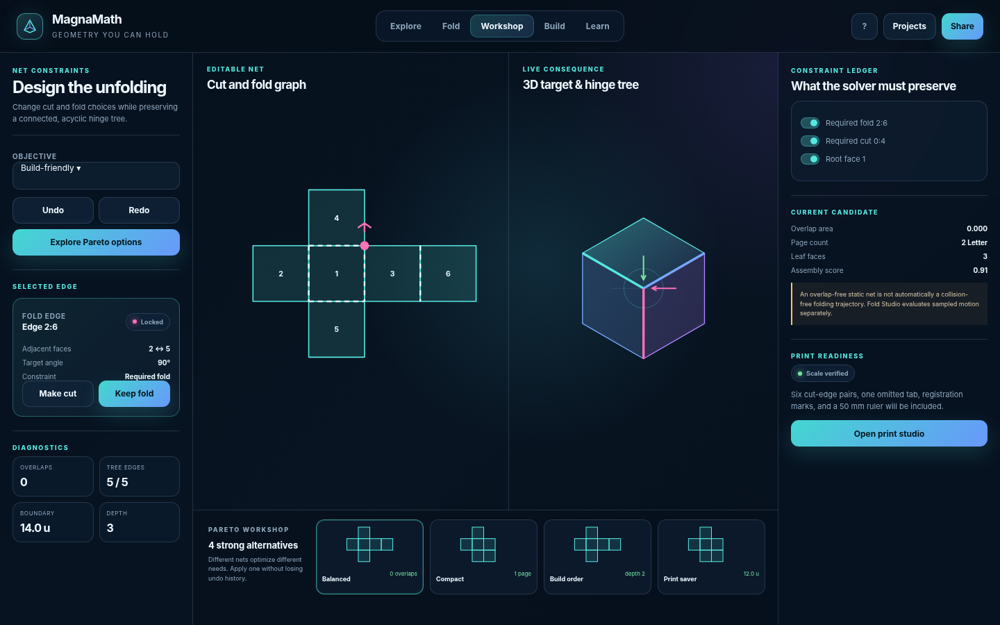
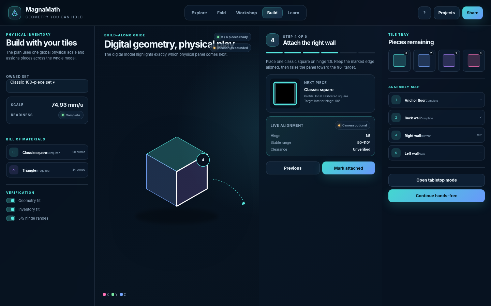
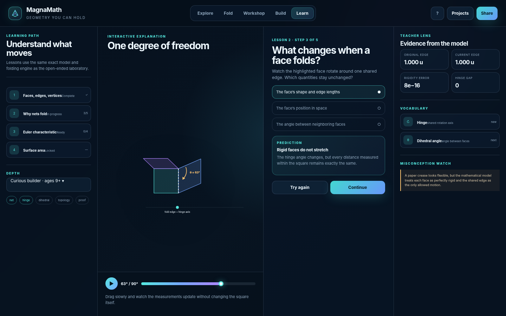
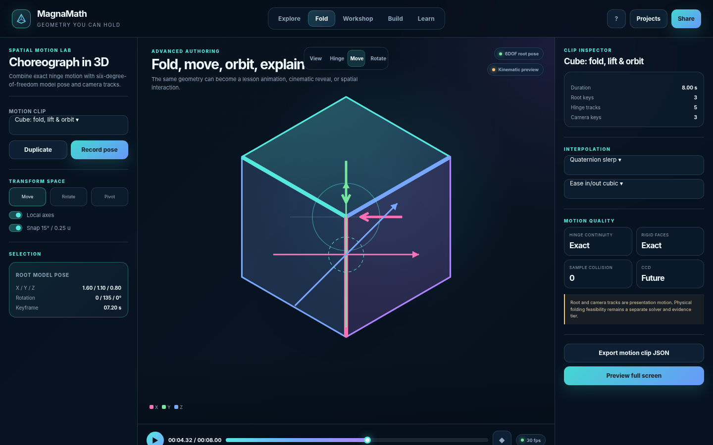
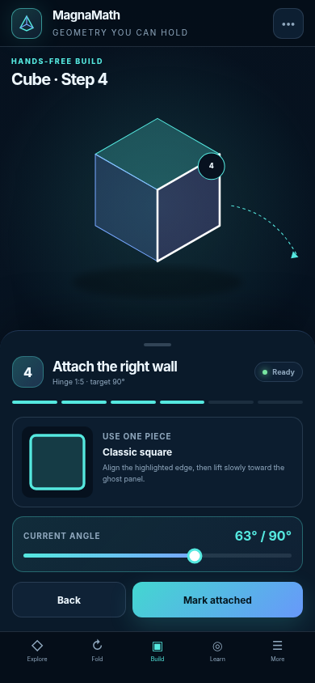

MagnaMath 0.4.0 handoff
Seven coordinated views for the exact geometry laboratory, folding studio, net workshop, physical build guide, learning experience, and future spatial authoring system.

Fold StudioExact 2D-to-3D hinge animation and diagnostics
Geometry ExplorerTopology, measurements, face inspection, and physical translation
Manual Net WorkshopConstraint-preserving edge surgery and Pareto alternatives
Physical Build-AlongInventory-aware, calibrated Magna-Tiles guidance
Learning LabInteractive explanations grounded in the same exact model
Spatial Motion LabKeyframed 6DOF model, hinge, and camera choreography
Mobile Build ModeTabletop-first step guidance and future camera verification